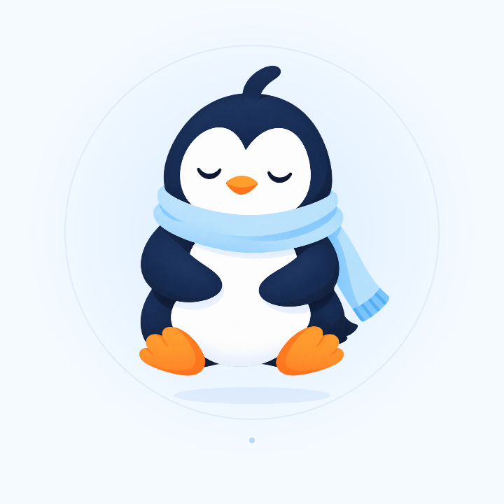
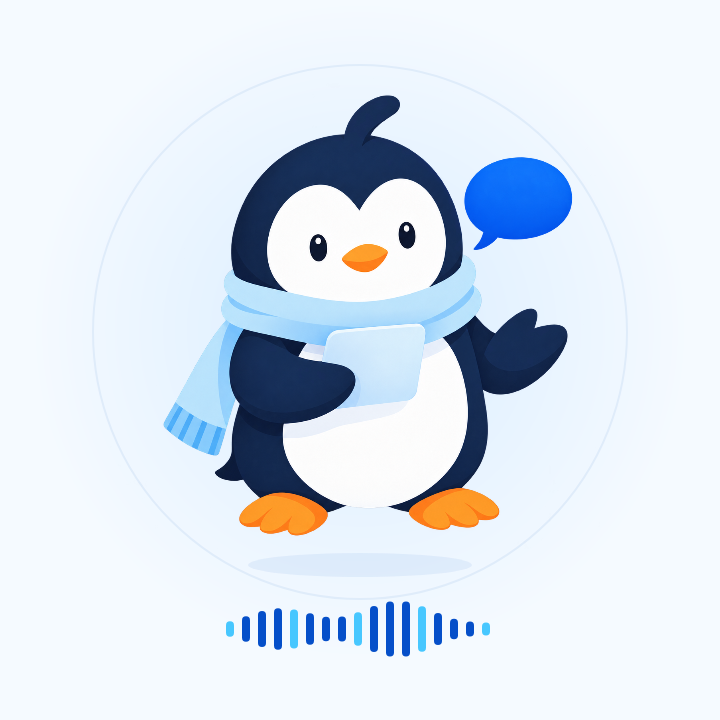

Two quiet movements, using the artwork we already have

A gentle lift that keeps Pingu’s shape intact

Illustrative voice waves — no microphone is active
Showcase exploration, separate from the app. Pingu moves as one illustration; blinking and waving need separate artwork layers.